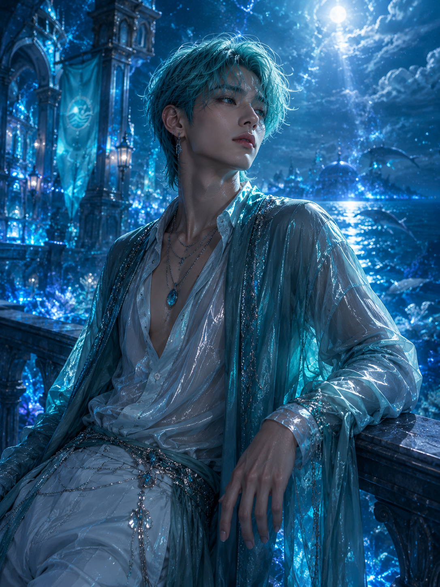

Emotional Heart
September 22
Thalassia
Blue Dolphin with an ocean pendant.
Tides Pearl
A world of endless oceans, ancient memories and tides that carry stories from the past.
Gentle, empathetic and deeply intuitive. Riven notices the emotions people try to hide and often understands what someone needs before they find the words to say it.
He feels things deeply, but that sensitivity is not a weakness. It is what allows Riven to connect the seven members, turning individual feelings into something they can share together.
“You don't always have to explain what you're feeling. Sometimes someone simply needs to know that they aren't feeling it alone. I'll stay until the waves become quiet again.”
Riven comes from Thalassia, a world where endless oceans carry the memories of everything that has ever touched their waters.
From childhood, Riven could sense emotions hidden beneath the surface. Joy, grief, fear and hope all reached him like waves, teaching him that sometimes the things left unspoken are the most important.
When the seven stars began to find one another, Riven became the thread that connected their hearts. He reminds AETHER that strength is not only found in standing tall, but also in allowing yourself to feel.
Every heart has its own tide. Riven simply knows how to listen.
Thalassia is a world almost entirely covered by deep blue oceans. Its waters hold memories, emotions and echoes of everything that has ever touched them.
Riven feels those echoes more strongly than most. His connection to emotion allows him to understand the feelings of the people around him, even when no words are spoken.
His blue dolphin Guardian travels beside him, carrying the Tides Pearl — a relic said to contain the memory of the first ocean.
But the deeper Riven looks into the waters, the more he realizes that some memories were never meant to surface.